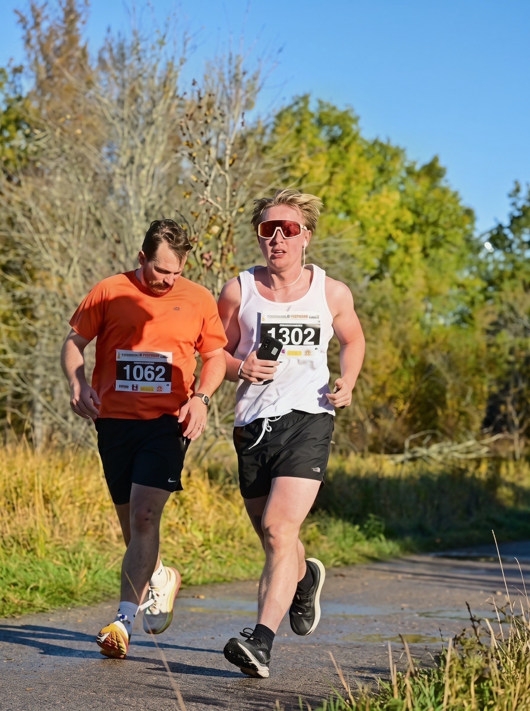

SCROLLA
Hej, jag heter Silas. Jag arbetar som Detail Design Engineer på Vattenfall i Forsmark, där jag varje dag möter kretsdesign och ventilationssystem i en miljö där precision och säkerhet är allt. Parallellt läser jag masterprogrammet i Embedded Systems vid Uppsala universitet.
Min styrka är att läsa och förstå komplexa kretsdiagram. Jag ser hur signaler, spänningar och reglerloopar hänger ihop i ett helt system och inte bara på komponentnivå. Den förmågan vill jag ta med mig in i nästa generations elektronik, där AI inte bara körs i molnet utan sitter inbyggd i själva hårdvaran.
Jag trivs som bäst när jag får bygga något som verkligen fungerar: en robotarm som reglerar sitt eget moment, eller en bensinbil som får ett nytt eldrivet hjärta. Teori är kul, men det är när något rör sig för första gången som det blir riktigt roligt.
Utomhus laddar jag batterierna genom löpning, calisthenics och beachvolleyboll. De ger mig uthållighet, disciplin och lagkänsla, och dem tar jag med mig in i varje projekt.

Detaljprojektering inom kretsdesign och ventilationssystem i en av Sveriges mest säkerhetskritiska industrimiljöer. Jag omvandlar krav och scheman till underlag som går att bygga, drifta och underhålla.
Erfarenhet från Ahlsell som gav mig en bred förståelse för elektronik- och installationskomponenter och för vad kunder faktiskt behöver ute i verkligheten.
Fördjupning i inbyggda system, reglerteknik och design av hård- och mjukvara som samarbetar.
SE STUDIEPLAN ↗Mitt kandidatexamensarbete. Jag utvecklade en robotarm styrd av en momentbaserad PID-regulator, från modell och reglerdesign till fungerande hårdvara.
Jag konverterade en bensinbil till en elbil och tog mig an hela kedjan: drivlina, batterisystem, kraftelektronik och integration i ett befintligt fordon.
Ett projekt kring styrning och automation av ett hisssystem, med fokus på PLC-logik, säkerhet och tillförlitlig drift.
Har du ett projekt, en idé eller bara vill snacka hårdvara och AI? Hör av dig.
SKICKA ETT MEDDELANDE →